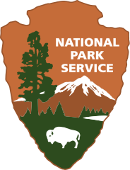
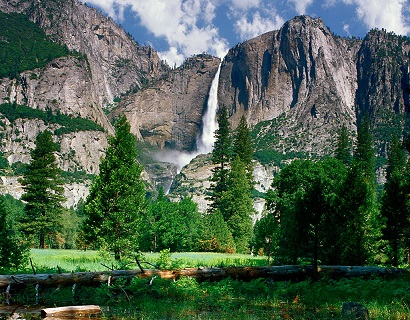

The National Park Service is a bureau of the U.S Department of the Interior that manages and protects the United States National Park System, which comprises more than 400 areas covering more than 85 million acres (340,000km2) across the United States.
 